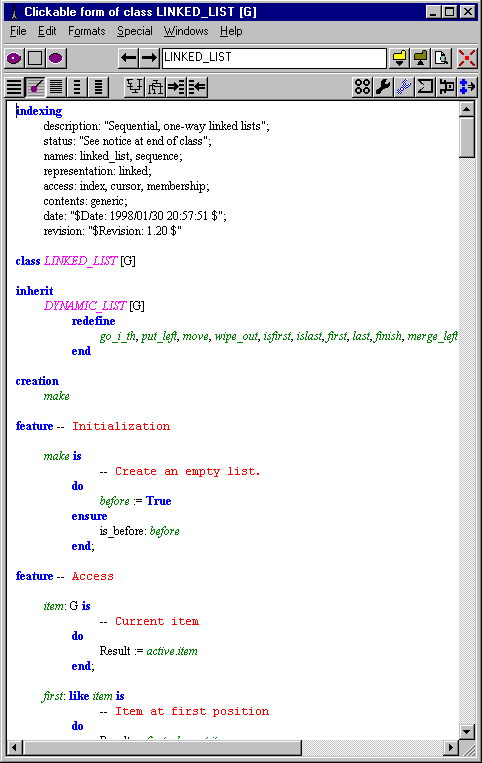

Object-oriented style rules
Consistency of style is important to software success. To help further this goal, ISE is making available for public use the basic style rules applied within ISE and recommended to other developers. The style guide (a book chapter) is currently available in Acrobat PDF format. Quality at all levelsThe Eiffel method emphasizes on quality at all levels. Quality is in the big picture -- robust and extendible architecture, proper use of Design by Contract, powerful inheritance hierarchy, information hiding, choice of algorithms and data structures, designing for reuse etc. -- but also in the details. In true software engineering, no aspect is too small to be overlooked. This is particularly true of mission-critical developments, systems that will be maintained over a long time, and reusable libraries. But in fact all software should be designed as if it were meant for the long term (if the industry had realized this earlier, we wouldn't even have anything to write about the Year 2000 problem), so everyone should apply good style rules. (Part of the) Truth is in the detailsAttention to detail is indeed one of the defining properties of the Eiffel method. The good news is, it costs hardly any more to do things right the first time around! To help software developers apply an effective and consistent style in their products, we are publishing here a general description of the style rules that ISE uses for its own development and that we strongly encourage others to use too. The style of the style rulesRather than a separate manual, the style document is in fact a book chapter from Object-Oriented Software Construction, second edition (Prentice Hall, 1997). If you don't have the book, you will miss the cross-references to other chapters and the bibliographic references. Tool supportAlthough it is always best (and not a significant extra burden) to follow the style rules right from the start, you can use the tools of the ISE Eiffel environment, especially the EiffelBench visual development workbench, to enforce most of the rules automatically.In particular you can reformat a poorly formatted class as follows under ISE EiffelBench:
(If you are sure of what you are doing, you can combine the last two steps by doing a "Save As" to the original file under EiffelBench, but make sure you have a backup first in order to avoid any mistake.) Here is an example Clickable format (at least, the beginning of the class) applied to the LINKED_LIST class from free EiffelBase.  Copyright statusAs noted at the beginning of the document itself, it is a copyrighted text and you may only use it for personal purposes, as a set of guidelines for elegant and effective software development. In particular, you may not republish the material or make it available on a Web site without the authorization of the author and publisher. Accessing the documentThe style guide is available as a |